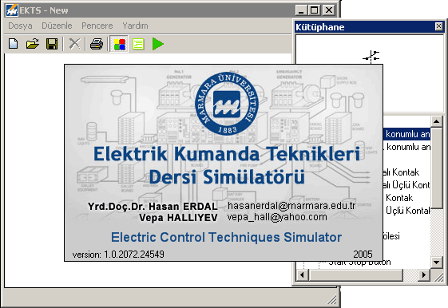

EKTS programını çalıştırmak için EKTS.exe dosyasına tıklanır ve program Şekil 2'de gösterildiği gibi açılır. Kurulum yapılan dizinde bulunan EKTS.exe dosyasına masaüstüne oluşturulan EKTS kısayolundan veya Başlat menüsünün Programlar alt menüsünde bulunan EKTS kısa yolundan ulaşılabilir.

Şekil 2: EKTS‘nin açılış görüntüsü.